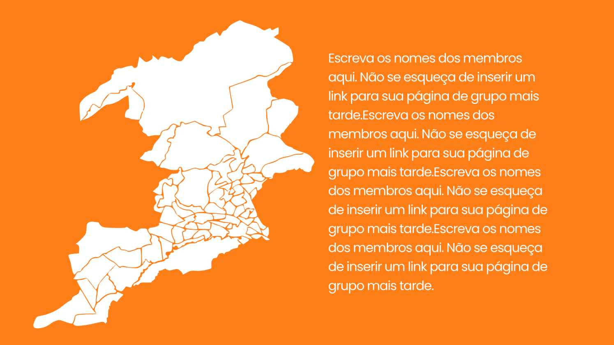
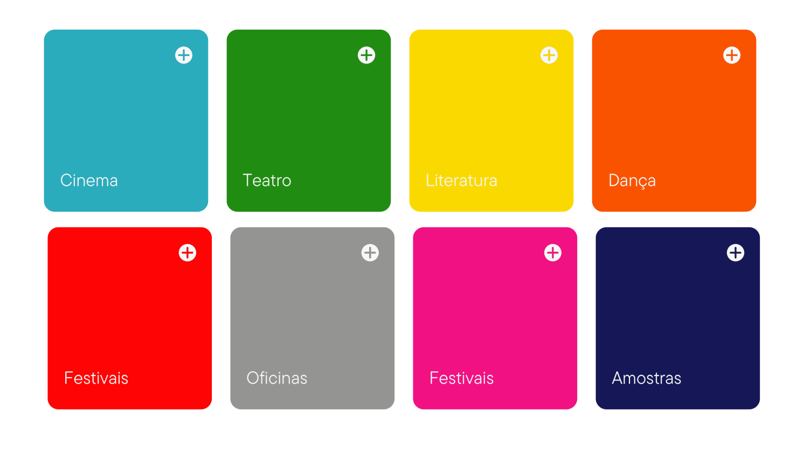

História
O Nova Iguaçu Futebol Clube, também conhecido como Nova Iguaçu, é um clube brasileiro de futebol da cidade de Nova Iguaçu. Manda seus jogos no Estádio Jânio Moraes, mais conhecido como Laranjão.
Fundado em 1º de abril de 1990, é um dos clubes de menores expressão mais jovens do estado. Em sua curta história, a equipe já conquistou por três vezes a segunda divisão do Campeonato Carioca (2005, 2016 e 2020), além do bicampeonato da Copa Rio (2008 e 2012). Foi concebido por 25 profissionais liberais encabeçados por Jânio Moraes, diretor-presidente do clube desde sua fundação até hoje. Teve seu início em uma sala de quarenta metros quadrados, localizada na Rua Topázio, número dez, no Centro de Nova Iguaçu. Um dos idealizadores do clube foi o ex-jogador Zinho, que foi titular da Seleção Brasileira na Copa do Mundo FIFA de 1994.
Em 1991, os dirigentes do Nova Iguaçu obtiveram a posse de um terreno de 135.000 metros quadrados para a construção de seu Centro de Treinamento através do então secretário de Esportes do Governo Fernando Collor, o ex-jogador Zico. A cor adotada pelo time foi o laranja, em homenagem ao período em que Nova Iguaçu foi um dos maiores exportadores de laranjas do mundo, na década de 1930 (a fruta é, ainda hoje, um dos principais símbolos da cidade).
Sedes e estádios
Localizado no centro de Nova Iguaçu, o Laranjão possui capacidade atual de 3.500 espectadores. O estádio pertence ao Nova Iguaçu Futebol Clube. Construído em 2009, a diretoria do clube iguaçuano pretende, a longo prazo, aumentar a capacidade para 30 mil pessoas.

